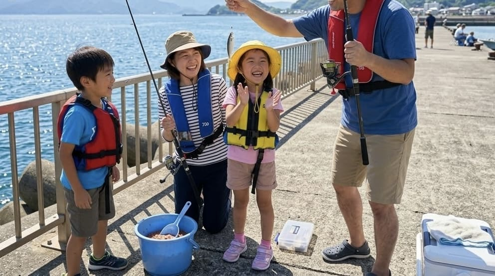
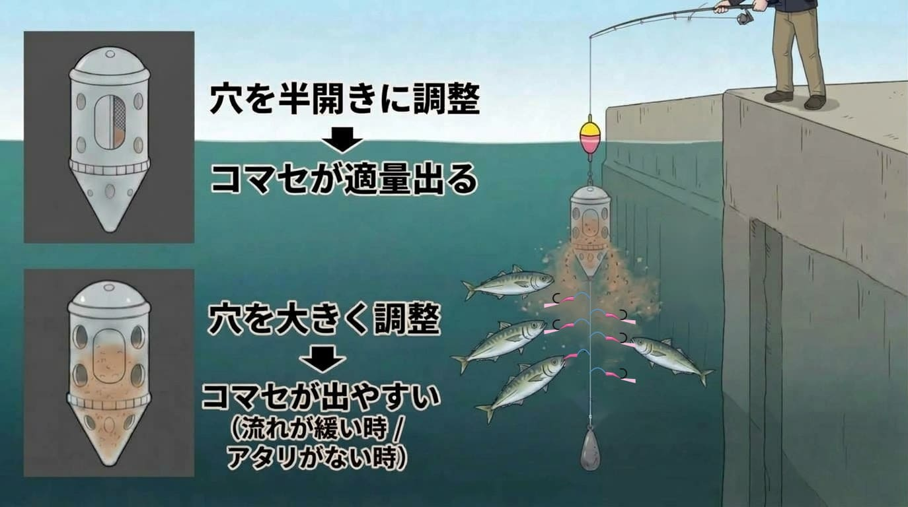

【堤防釣りの絶対的入門】サビキ釣り完全ガイド ― 道具の賢い揃え方から鮮度管理まで

サビキ釣りは、堤防からアジ、サバ、イワシといった人気魚種を同じ仕掛けで狙える、最も始めやすい釣り方です。しかし、「ただカゴを落とすだけ」と侮ってはいけません。道具の選び方や現場でのちょっとした調整が、釣果を大きく左右します。この記事では、今日からサビキ釣りを始めるための準備から、現場で差がつくテクニック、美味しく持ち帰るための極意までを順番に解説します。
1. 道具は「釣具店」と「100均」の賢い二刀流で
道具をすべて高価なもので揃える必要はありません。おすすめは、購入場所を賢く分担することです。
- 釣具店で買うべきもの：
竿とリールは、予算と好みに合わせて店員さんに相談しながら選ぶのが確実です。扱いやすいのは、3m前後の竿とスピニングリールの組み合わせです。もしお手持ちに長めで硬めのシーバスロッドがあれば、サビキ釣りには最適に流用できます（逆に短くて柔らかいシーバスロッドなら、アジングやちょい投げにおすすめです）。 - 100円ショップで調達するもの：
仕掛け、コマセカゴ、オモリ、水汲みバケツ、ハサミなどの小物類は100円ショップで十分に揃います。初心者向けのサビキセットもあるので、まずはそこから始めるのも手です。 - 命を守るライフジャケット：
堤防は足を滑らせれば海に落ちる危険な場所です。ライフジャケットだけは100均ではなく、釣具店やホームセンターで国の安全基準（桜マークなど）を満たしたものを選んでください。
このほか、クーラーボックスは釣れた魚を持ち帰るための必需品であり、タオルやゴミ袋、針外し用のプライヤーなどがあるとより快適です。
2. 仕掛けの正解は「一番近い釣具店」が知っている
サビキ仕掛けは針の号数やハリスの太さが無数にあり、初心者が最も迷うポイントです。ここでの絶対的な正解は、「その釣り場に一番近い釣具店で聞く」ことです。
お店の人は、「今この堤防で、どんな魚が、どのサイズで釣れているか」という今日の海のリアルな状況を知っています。「〇〇の堤防でサビキをしたいのですが、今は何が釣れていますか？ どの仕掛けが合いますか？」と直接聞くことで、現場に最もマッチした仕掛けを確実に入手できます。
3. コマセの選び方と「8分目」の法則
魚を足元に集めるための撒き餌（コマセ）は、釣果を左右する最重要アイテムです。
- 基本は「アミコマセブロック」：冷凍のブロック状になったアミエビで、迷ったらまずこれを選べば間違いありません。釣り場で解凍して使用します。
- 地域や状況による特効エサ：地域や時期によっては、シラスブロックなどが特効エサになることもあります。これも釣具店で確認してみましょう。
- 混ぜ物の活用：パン粉やぬかでかさを増やしたり、集魚剤で匂いを足すこともありますが、必須ではありません。まずはアミコマセ単体で始めるのがおすすめです。
ついカゴ満タンにコマセを押し込みたくなりますが、それは逆効果です。満タンにすると海中でコマセが詰まって出なくなります。8割程度にゆるく抑えて詰めることで、竿をシャクった時に少しずつ綺麗にコマセが撒かれます。
4. 現場で差がつく！カゴの調整と「タナ」の意識
潮に合わせたカゴ調整
同じ仕掛けでも、その日の潮の流れによって結果が変わります。
- 潮が速いとき：コマセが一気に流されてしまうため、カゴの窓を小さめにし、オモリやカゴを重くして足元に留まらせます。
- 潮が緩いとき：コマセが出にくくなるため、窓を大きめに開け、竿を上下にしっかり動かして振り出しましょう。

狙うは「足元」から
サビキ釣りでは遠投せず、まずは足元や堤防のすぐ際から探り始めるのが鉄則です。コマセと仕掛けが同調しやすく、群れが寄っていることも多い場所だからです。遠投するほど根掛かりなどのトラブルも増えます。手前で反応がなければ、表層、中層、底へとタナ（深さ）を順に探っていきましょう。
5. 魚種別・釣果を伸ばすアクション
狙いのタナまで仕掛けを入れたら、軽くシャクってコマセを出し、ピタッと止めて仕掛けをなじませるのが基本のリズムです。竿先にブルブルッとアタリが出たら、魚種に合わせて対応を変えましょう。
- アジ・イワシは「待つ」：1匹掛かってもすぐに巻かず、数秒待つことで他の針にも次々と魚が掛かる「追い食い」が狙えます。
- サバは「即回収」：掛かると横に走って猛烈に暴れるため、待っていると仕掛けがグチャグチャに絡んでしまいます。掛かったら待たずにすぐ巻き上げてください。
6. 知らない魚は触らない！危険生物とトラブル対策
サビキ釣りでは、狙っていない魚が釣れることもよくあります。アイゴ、ゴンズイ、オコゼ類、エイなどはヒレや尾に毒の棘があり、フグ類も強い毒と鋭い歯を持ちます。ダツが夜に光に向かって突進してくることもあります。
「名前が分からない魚は絶対に素手で触らない」ことを徹底してください。針を外す時はペンチを使い、外しにくい時は無理をせずに糸を切りましょう。軍手をしていても棘が貫通することがあるため、過信は禁物です。
7. 最高の食味のための鮮度管理とマナー
取り込みの際は、竿の弾力を使って一気に堤防の上へ抜き上げます。口が弱いアジは丁寧に、暴れるサバは手早く、傷みやすいイワシは優しく扱うのがコツです。
サビキで釣れる魚は傷みやすいため、釣れたら早く冷やすことが最も重要です。クーラーボックスに氷と海水をあらかじめ入れておき、そこへ釣れた魚をすぐに入れることで素早く全体を冷やすことができます。
最後に、コマセで汚れた堤防は必ずバケツの水で綺麗に洗い流し、ゴミはすべて持ち帰るのが釣り人の最低限のマナーです。準備が整ったら、安全第一でサビキ釣りを楽しみましょう！

📍 関東の生息・釣果スポット
※マップ上の赤いドットが釣れるポイントです。